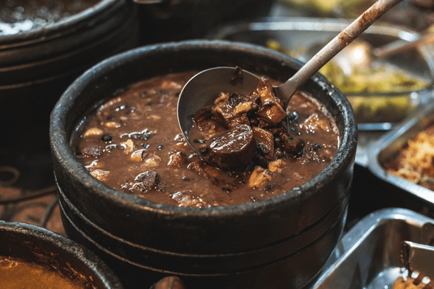

Feijoada

Description
Feijoada originated in Portugal, named for the Portuguese word for beans, "feijão." It's a bean-based dish made with various meats and vegetables. Like many stews, its ingredients are flexible. It may have come to Brazil when Portugal colonized the country in the 16th century (similar dishes are found in other countries colonized by Portugal) or when European settlers came to Brazil.
While its origins are uncertain, what is certain is that it is now the national dish of Brazil. Just like with chili in the U.S., various regions have their specific ways of preparing it. Brazilians often serve the beans and meats separately. Our recipe is a simplified feijoada with the beans and meat cooked and served together.
Ingredients
- 1 pound (450g) dry black beans
- 4 tablespoons extra virgin olive oil
- 1 pound (450g) pork shoulder
- 2 large onions, sliced
- 1 head garlic, peeled and chopped
- 1 pound (450g) carne seca or corned beef, cut into chunks
- 1/2 pound (225g) fresh sausages, such as chorizo or Italian sausage
- 1 pound (450g) smoked sausage, such as linguica or kielbasa
- 1 smoked ham hock or shank
- 3 to 4 bay leaves
- Water
- Kosher salt
Steps
- Soak the beans in hot water:
Pour boiling water over the black beans and let them sit while you prepare the rest of the stew.
- Brown the pork shoulder
Heat the olive oil in a large pot over medium-high heat and brown the pork shoulder. When the meat has browned, remove the meat from the pot, set aside.
- Brown the onions and add garlic
Add the onions to the pot. Brown them, stirring occasionally, scraping up any browned bits from the bottom of the pot. Sprinkle a little salt over the onions and add the garlic. Stir well and sauté 2 more minutes.
- Add the meat, bay leaves, and water
Add back the pork shoulder and the other meats. Add enough water to cover all ingredients. Add the bay leaves, cover, and bring to a simmer. Cook gently for 1 hour.
- Add the soaked black beans
Drain the black beans from their soaking liquid and add them to the stew. Simmer gently, covered, until the beans are tender, about an hour and a half.
- Serve with white rice and hot sauce. A classic side dish would be sautéed collard greens.